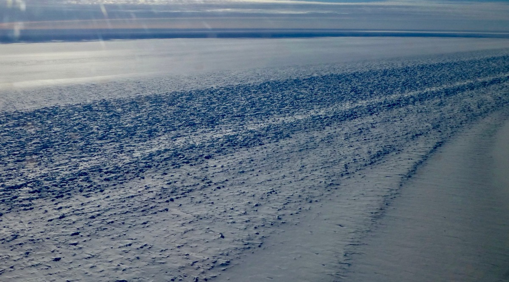

Ice Rheology and Shear Margins

Fast glacier flow is restrained by drag in lateral shear margins—bands of intense deformation separating fast-flowing ice streams from stagnant ice or rock walls. The drag exerted by shear margins depends on ice rheology, which evolves through damage, heating, melting, and crystallographic fabric development. We seek to understand the relative contributions of all rheological mechanisms, with particular emphasis on thermomechanics: ice rheology depends strongly on temperature and liquid water content, and deformation produces heat that warms cold ice and melts temperate ice, creating feedbacks that affect both the rheology and the dynamics of ice flow.
Relevant Publications
* graduate students, ** undergraduates, ☆ postdocs and research scientists.
-
Ranganathan, M.* and Minchew, B. M.. “A modified viscous flow law for natural glacier ice: Scaling from laboratories to ice sheets.” Proceedings of National Academy of Sciences, 121(23), 2024.
-
Ranganathan, M.*, Barotta, J. W.**, Meyer, C. R., and Minchew, B. M.. “Meltwater generation in ice stream shear margins: Case study in Antarctic ice streams.” Proceedings of the Royal Society A: Mathematical, Physical and Engineering Sciences, 479(2273), 2023.
-
Millstein, J. D.*, Minchew, B. M., and Pegler, S. S.. “Ice viscosity is more sensitive to stress than commonly assumed.” Nature Communications Earth and Environment, 3(57), 2022.
-
Ranganathan, M.*, Minchew, B. M., Meyer, C. R., and Pec, M.. “Recrystallization of ice enhances creep and the vulnerability to fracture of ice shelves.” Earth and Planetary Science Letters, 576, 2021.
-
Hunter, P.*, Meyer, C. R., Minchew, B. M., Haseloff, M., and Rempel, A.. “Thermal controls on ice stream shear margins.” Journal of Glaciology, 67(263), 435–449, 2021.
-
Ranganathan, M.*, Minchew, B. M., Meyer, C. R., and Gudmundsson, G. H.. “A new approach to inferring basal drag and ice rheology in ice streams, with applications to West Antarctic ice streams.” Journal of Glaciology, 67(262), 2021.
-
Riel, B. V.☆ and Minchew, B. M.. “Variational inference of ice shelf rheology with physics-informed machine learning.” Journal of Glaciology, 69(277), 1167-1186, 2023.
-
Martin, D. F., Kachuck, S. B., Millstein, J. D., and Minchew, B. M.. “Rates of sea-level rise are highly sensitive to ice viscosity parameters in model benchmarks.” AGU Advances, 7(2), e2025AV001946, 2026.